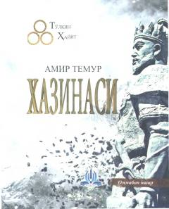

ATAmir Temur va Temuriylar haqida qiziqarli tarixiy ma'lumotlar to'plami.
Ushbu kitob Amir Temur va Temuriylar tarixiga oid qiziqarli ma'lumotlar, hayotiy-ibratli voqealarni o'z ichiga oladi. Muallif Tulqin Hayit ikki mingdan ortiq manba asosida Sohibqiron Amir Temurning ilm-fan, me'morchilik, musiqa, tibbiyot va adabiyot sohasidagi faoliyatini yoritadi. Kitob ommaboq uslubda yozilgan bo'lib, keng kitobxonlar ommasi uchun mo'ljallangan.